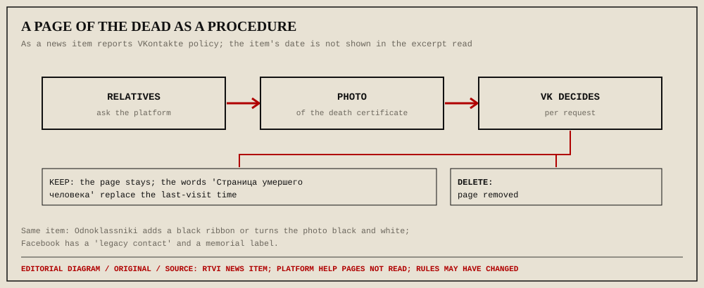
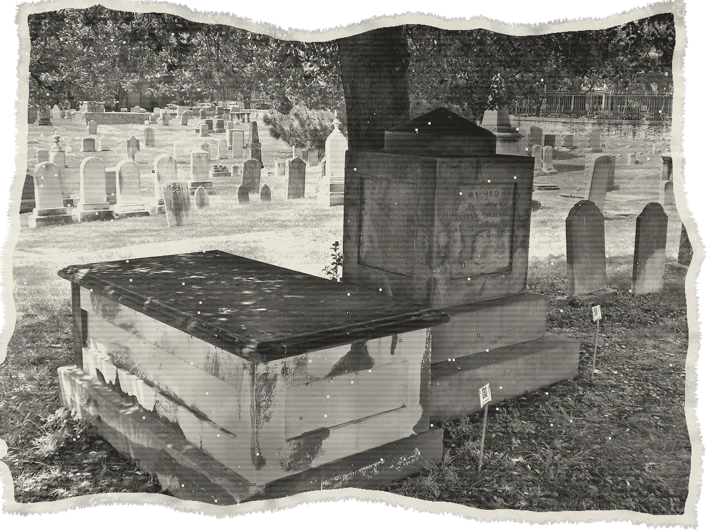

VOL. IV · PLATE X · 05 / 07
THE DIGITAL AFTERLIFE
Online memorials, accounts of the dead and what sources claim
Four sources on dead users’ accounts, online mourning, avatars of the dead and platform procedures, all read at the level of an abstract or a news item and stated as such.
2020–2025 · Russian-language internet · Online commemoration in Russia
X / 01
More dead than living
A. Sergeeva, R. Gerlit and H. Krcmar analysed 33 social networks and online services, surveyed 173 internet users and interviewed experts, taking Russia as their example (Jusletter IT, 27 May 2020, IRIS 2020 proceedings). Their abstract expects services to host more deceased than living users in the coming decades, accounts and data to persist, the deceased to keep receiving invitations and birthday greetings, and heirs to find it hard to identify all accounts and reach the data.
This plate has the abstract only. The ‘more dead than living’ line is a projection, and the survey’s sample is not known here.
X / 03
Avatars and grief
Researchers from HSE University in Nizhny Novgorod, T. Khusyainov and E. Urusova, are reported as saying that digital footprints can support grief by sustaining a sense of connection, and that the same tools can raise anxiety, delay acceptance of loss and increase the risk of retraumatisation. They describe AI avatars of the dead, which can recreate voice and habits and can also produce errors, with a comparison to Frankenstein’s creature.
The two effects are put forward together by the researchers themselves, and the atlas leaves both open. The plate has a university news item, not the article. The item does not discuss Russian law.
X / 04
What platforms say they do
A news item reports that VKontakte marks or deletes the page of a dead user at the request of relatives, who send a photograph of the death certificate. If the page is kept, the words ‘Страница умершего человека’ appear in place of the last-visit time. The same item says that since 2011 a VK page could be kept unchanged or deleted, that Odnoklassniki adds a black ribbon or turns the photo black and white, and that Facebook lets a ‘keeper’ be named for the page and gives it a memorial status with the words ‘Светлая память’ by the name; it adds that Instagram has a similar system.
This is a report of platform policy as of 26 November, which the item gives by day; the year, 2020, comes from a Belarusian outlet’s report of the same news, so the policy described is six years old. The platforms’ own help pages were not read, and rules of this kind change. What the item shows is that a page of the dead is a category the platform has made a procedure for, with a document as the key.
Primary operational regulations from VKontakte (VK Help Center / Terms of Service) document the formal digital protocol governing Russian accounts. Upon the verified submission of a state death certificate and proof of direct kinship, the platform offers relatives two mutually exclusive options: permanent account deletion or conversion into a frozen memorial profile (pamiatnaia stranitsa). When memorialized, a permanent text badge ('The page of a deceased person') is pinned beside the user's name; private messaging, profile editing, and new wall publications are permanently locked to avert spam, trolling, or identity theft, while existing photographs, posts, and past correspondence remain accessible to friends as a static digital cenotaph.
X / 05
Source, material and limits
| Source | Material | Limit |
|---|---|---|
| Sergeeva, Gerlit, Krcmar (2020) | 33 services, 173 users, expert interviews | Abstract only; sample unknown |
| Linden (dissertation) | Three memorial sites; virtual ethnography | Abstract and title page only; 2021; theoretical claims |
| Khusyainov and Urusova (2025) | Researchers’ claims on grief and avatars | News item, not the article |
| Press report on VK, Odnoklassniki, Facebook | Platform procedures for pages of the dead | News item, 26 November 2020; policies change |


Platform policy
Memorial pages on VKontakte (VK policy, 2020)
Страницы памяти ВКонтакте (политика VK, 2020)
Original
English translation
Excerpt Paraphrase of the key provisions of VK's memorial page policy.
VK's memorial page policy is modelled in part on Facebook's (Meta's) legacy contact system, but adapted to Russian legal conditions regarding data and inheritance. The policy distinguishes between 'freezing' (restricting the account from active functions while preserving content) and 'deletion'. The legal status of a deceased person's digital content in Russian law was not settled as of the date of the policy.
- страница памяти
- Memorial page: VK's term for a frozen account repurposed as a site of commemoration.
Source VKontakte, 'Memorial Page Policy', 2020 (updated 2024).
Rights PARAPHRASE. Paraphrase of a publicly accessible platform policy document.
Apparatus sources · related plates · terms
Sources for this plate
- sergeeva2020 Sergeeva, Alla; Gerlit, Robert; Krcmar, Helmut — Digital inheritance in Russia (2020)
- linden-online-death Linden, Katerina — Death Online in Contemporary Russia: Memory, Forgetting and the Connective Presence of Mourning on the Internet (n.d.)
- hse-digital-grief2025 HSE University news service, reporting T. Khusyainov and E. Urusova — Hi-Tech Grief: HSE Researchers Explore the Pros and Cons of Digital Commemoration (2025)
- rtvi-vk-dead RTVI news desk, citing TASS and the VK press service — «ВКонтакте» начала помечать страницы умерших пользователей по просьбе их родственников (n.d.)
- vk-policy-memorial VKontakte (VK LLC) — Pamiatnaia stranitsa i podtverzhdenie smerti pol'zovatelia [Memorial Page and Verification of User Death] (2020 (updated 2024))
- moroz2021 Мороз, О. В. — Цифровая смерть и практики коммеморации в русскоязычном интернете (2021)
URLs, access dates and limitations are in the bibliography.
Related plates
Terms in this plate
Citation
Archaeology of Russian Death. Plate X: THE DIGITAL AFTERLIFE. Online memorials, accounts of the dead and what sources claim // An Atlas of Material Culture and Ethnography. 2026. URL: https://DmitryLeLeE.github.io/rus_death/plates/x-digital-afterlife.html.